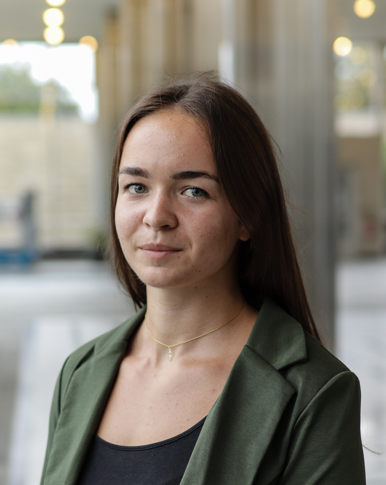

My name is Laury , I am 21 years old. I'm learning how to develop a website so keep reading to discover who I am !
Carrefours HEC
Since I was born in July 2001, I live in Brittany, in a village called Dompierre-du-Chemin. I first left it during the week when going to High School since I had to enter a boarding school to obtain a Bachibac. In 2019, I started my Parisian life when I integrated my preparatory class in Henri IV. 2 years after, I started at HEC Paris in the Grande Ecole program. However, Brittany is still the real place I live in to me.
I would like to work in Marketing for a big company. I am passionate about dermocosmetics and that's why I would enjoy working in this professional area. However, I would also love to work in the sports industry.
After 8 years of dancing, I started weight-lifting. Going to the gym was much more convenient and I found a sport I was good at and that I was enjoying. When starting at HEC Paris, I tried Crossfitting and I discovered it was the best sport for me, with cardio and strength at the same time. Besides, I joined the Crossfit club, an amazing club with people from all over the world. Happy to gather and spend time together during and after the Crossfit sessions.
I am crazy about tea, I drink tea all day. Black, green , white , Whatever ! Let's have a cup of tea !
The main country I visited was Spain, due to my eductional path in High School and my love for the Spanish language. I also travelled to Thailandia, Egypt, Crete, England, ... And I really enjoy discovering new cultures and habits. I've also spent a semester in Milan, Italy , last semester. I studied at the Bocconi University and I visited the city and its surroundings.